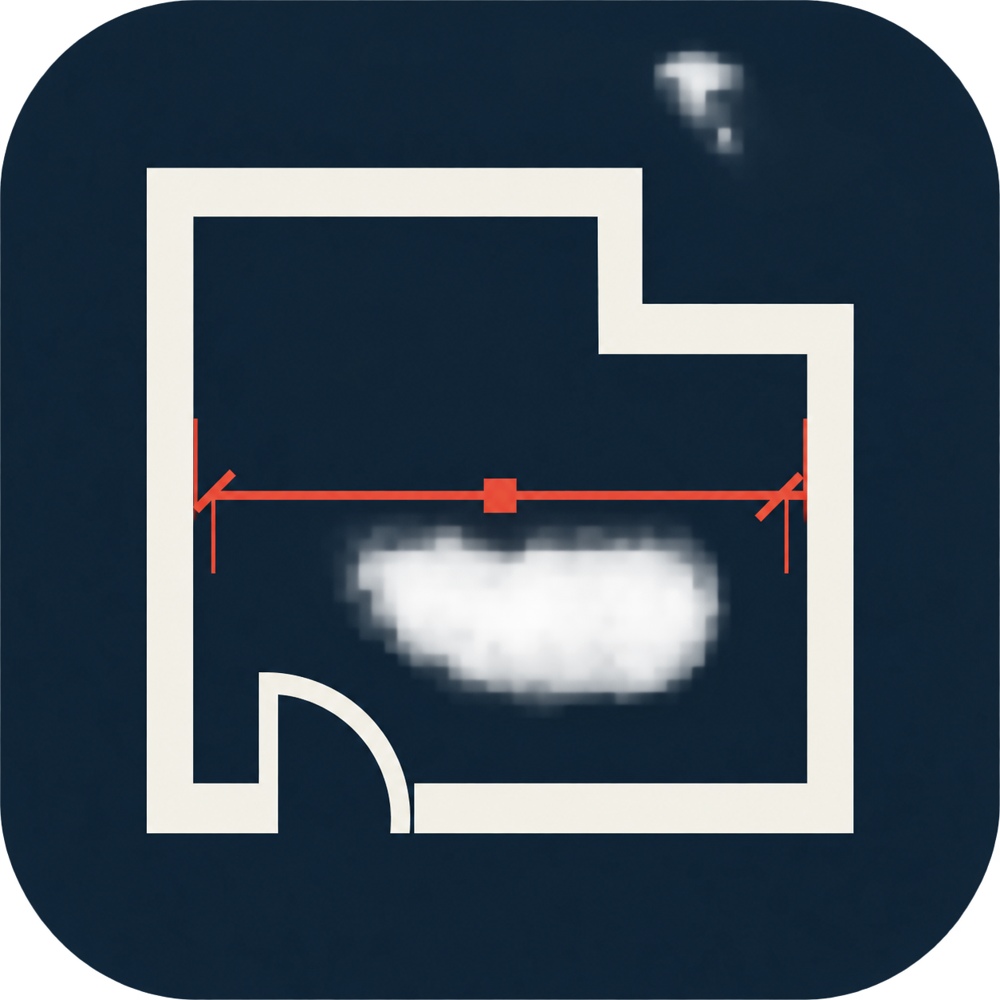

测量，直接接入
通过 BLE 连接 Bosch GLM 设备，接收距离读数、保存测量历史，并导出 CSV，减少现场抄写。
Bosch GLM · Bluetooth LE
LaserSketch®GitHub从现场测量，到空间记录
让激光测量成为草图上的一条尺寸。
连接 Bosch GLM，画下平面、标注照片，
把现场的每一个细节带回来。
BLE 激光测距
+平面草稿
+照片标注
→完整空间记录
01 / 工具，恰到好处
从一个距离开始，让零散的数据成为有上下文的空间信息。
通过 BLE 连接 Bosch GLM 设备，接收距离读数、保存测量历史，并导出 CSV，减少现场抄写。
Bosch GLM · Bluetooth LE绘制墙体，添加门窗与柱。用实测尺寸调整墙长和净距，配合撤销、重做逐步完善平面草稿。
墙体 · 门窗 · 尺寸驱动在现场照片上添加尺寸、文字、角度与面积标注。引用最近的测量结果，保存并分享标注图片。
尺寸 · 文字 · 角度 · 面积连接 Bosch GLM，测量并保存距离记录。
绘制平面草稿，或在照片上添加现场尺寸。
本地保存，导出图片、CSV 或完整 .lsk 工程。
03 / 同一个项目，更多可能
蓝牙测距、平面草稿、照片标注与本地工程管理。使用 Gradle 构建并在设备上运行。
查看构建说明 ↗复用 Kotlin 核心与 Compose 界面。主要功能已接入；蓝牙及部分权限、手势仍待真机验收。
查看迁移与验收范围 ↗在 Android 与 iOS 之间手动导入、导出完整工程。数据保存在本机，不提供云端自动同步。
LASERSKETCH / OPEN SOURCE
查看源码、了解构建方式，
一起完善现场测量的工作流程。